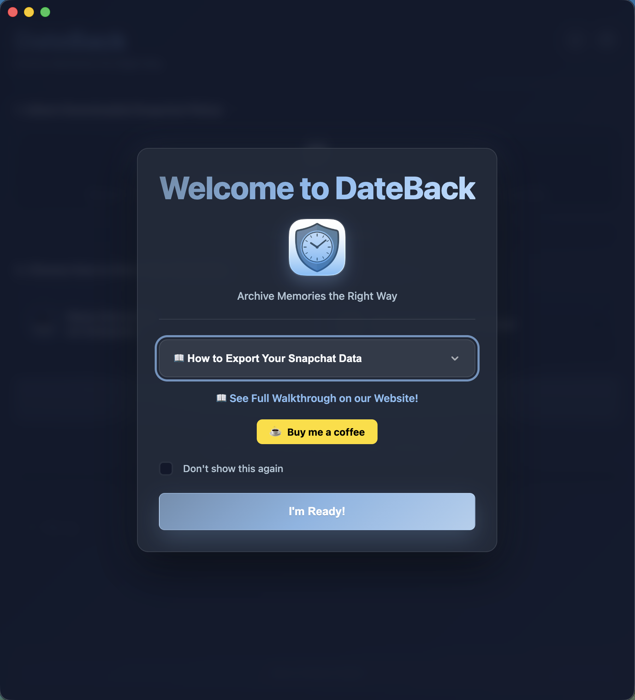
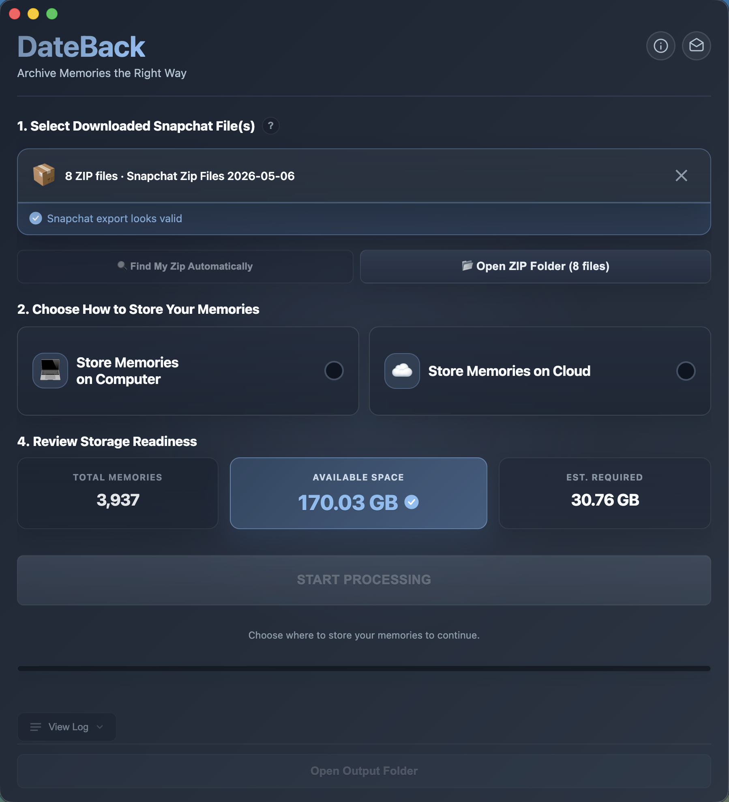
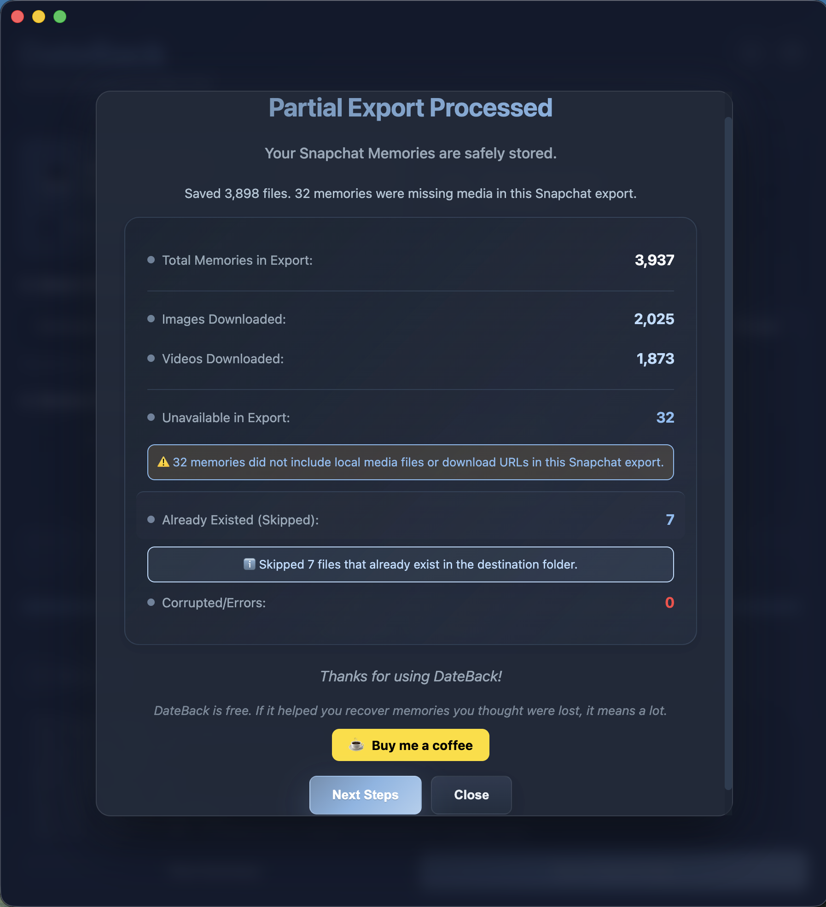
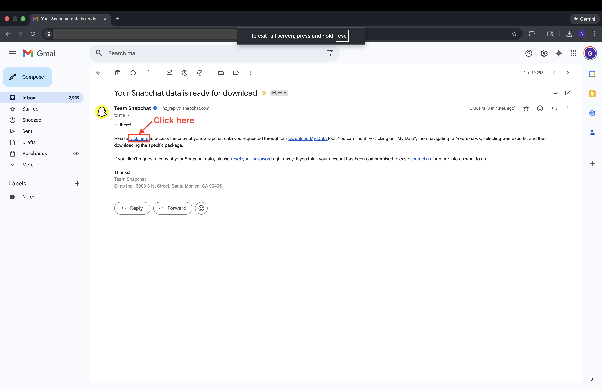
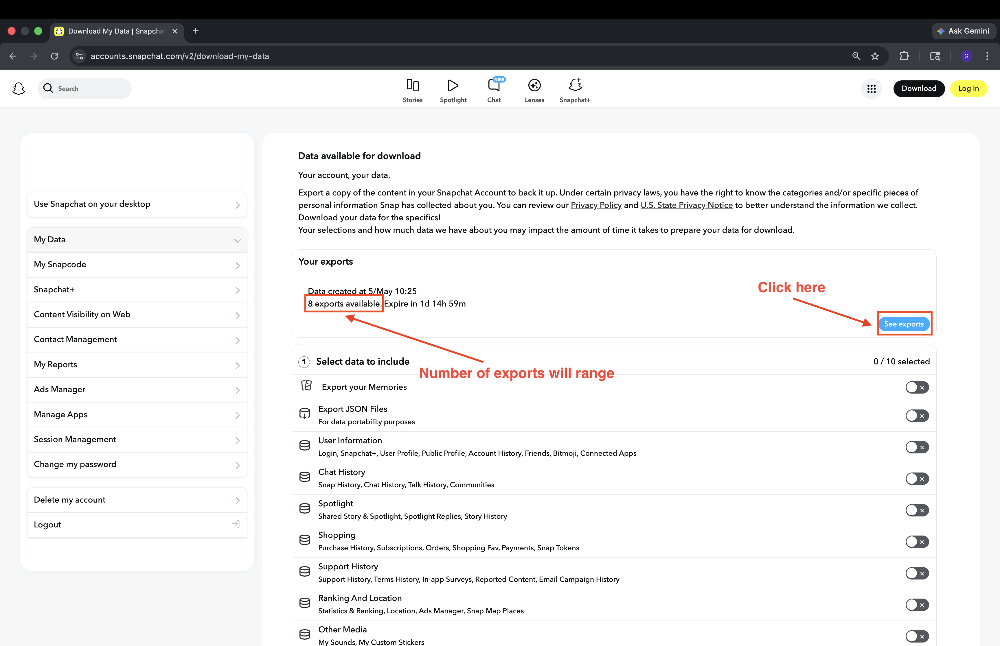
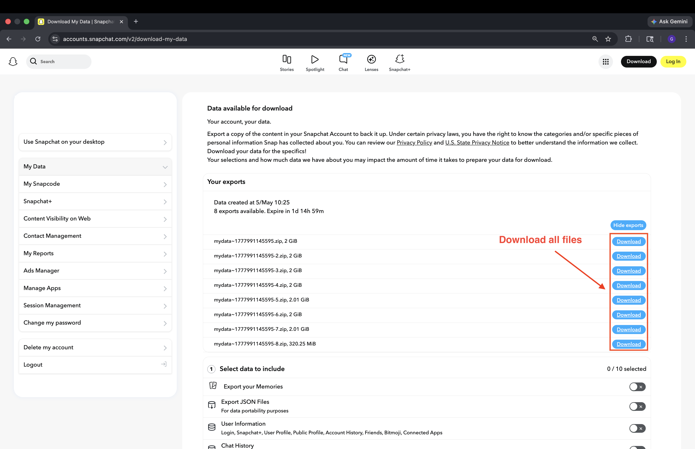

Don't lose your past.
Archive Snapchat Memories the right way.
Export your Snapchat Memories, run DateBack, and get perfectly dated, organized files —
ready to upload to Google Photos, iCloud, or any cloud storage forever.
System requirements: Apple Silicon Mac (M1, M2, M3, M4) · macOS 11.0 (Big Sur) or later



Restore Date Taken. Keep your timeline.
Snapchat exports overwrite 'Date Taken' with the export date. DateBack restores the original.

Merge overlays automatically
Snapchat exports overlay text and drawings as separate files. DateBack automatically merges them back into one complete memory.
❌ Without DateBack

main.jpg

overlay.png
❌ Broken into parts
✅ With DateBack

2020-08-23_17-09-51.jpg
✅ Perfect merged memory
How DateBack Works
The gist — what DateBack does in about 60 seconds.
Open DateBack
App automatically finds your Snapchat export—no searching required.
Choose Location & Start
Pick where to save your memories, then hit "Start Processing."
Upload in Batches
DateBack organizes files into cloud-ready folders with correct dates restored.
Privacy & Security
Your memories are personal. DateBack keeps them that way—securely.
Apple Notarized
Signed and verified by Apple for your security.
Runs 100% Locally
No cloud processing. Everything happens on your Mac.
No Uploads
Your files never leave your device.
No Account Required
No sign-up. No tracking. No data collection.
Optional Support
Free to use. Support the project only if it helps you.
Why Use DateBack?
Standard export tools are broken. They strip your dates and crash on large files. DateBack was built to solve the problems that others ignore.
The "Time Travel" Fix
If you download manually, all your photos say "Today" for the date. DateBack reads the hidden JSON data and injects the original date back into the file. Your 2018 memories will actually stay in 2018.
Cloud Mode Streaming
Have 50GB of memories but only 10GB free? No problem. Cloud Mode processes in batches of 500 files, pausing so you can upload and delete before continuing. Never run out of space.
Smart Batching
Uploading 20,000 files to Google Photos crashes your browser. DateBack automatically organizes your files into neat batches of 500, making cloud upload smooth and crash-free.
Stop Renting Your Own Memories
Cloud subscriptions charge you monthly. See how the costs stack up.
(recurring)
(optional support)
(your drive)
❌ Cloud Subscription
- Cost: $24/year (recurring)
- Storage: 100GB Limit
- Ownership: You rent access
- Dates: Locked in app
- Privacy: External servers
✓ DateBack
- Cost: Free download
- Storage: Unlimited (your drive)
- Ownership: You own the files
- Dates: Fixed (EXIF)
- Privacy: Runs locally (offline)
Free Download
Save your memories before they're gone forever. No account, payment, or activation key required.
- Unlimited Photos & Videos
- EXIF Date Correction (Metadata Fix)
- Cloud Mode — Zero Disk Space Needed
- Smart Resume (Never Lose Progress)
- macOS 11+ (Apple Silicon)
Download the latest notarized Mac release from GitHub.
Current version: v1.4.2
Frequently Asked Questions
Is this safe? Do you see my photos?
It is 100% safe. DateBack processes everything locally on your Mac — your photos are never uploaded, tracked, or seen by anyone but you.
Does this work on Windows or Intel Macs?
Apple Silicon Macs only (M1, M2, M3, M4). Intel Macs and Windows are not currently supported. Future versions may expand compatibility.
My download is 100GB+. Will this work?
Yes! We specifically built Cloud Mode for this. Unlike other tools that crash trying to unzip everything at once, DateBack streams one file at a time. It handles massive libraries effortlessly.
What is Cloud Mode?
Cloud Mode processes your memories in batches of 500 and automatically delivers each batch to a cloud folder you choose — iCloud Drive, Google Drive, OneDrive, Dropbox, or Box. DateBack copies files into your synced folder; your cloud provider's app handles the upload to the cloud. After each batch completes, the app pauses so you can continue to the next batch or stop for now. The Open Output Folder button in Cloud Mode opens your cloud destination folder directly.
How does setup work?
DateBack walks you through five steps: (1) open the app — it automatically finds your downloaded Snapchat ZIP files; (2) choose where memories will be stored; (3) review the storage check; (4) pick Computer or Cloud mode; (5) if you chose Cloud, select a destination folder and optionally adjust Advanced settings. If you don't choose a folder, memories are saved to ~/Pictures/SnapchatMemories by default.
Snapchat gave me multiple ZIP files. What do I do?
This is normal for large Snapchat exports. You'll see files named like mydata~[timestamp].zip, mydata~[timestamp]-1.zip, mydata~[timestamp]-2.zip, and so on. Download each one from Snapchat's download page and save them all to the same folder — Downloads works fine. When you open DateBack, it automatically finds all the files from the same export and processes them together as one.
Can I resume if I stop midway?
Yes. When you restart processing on an existing output folder, DateBack shows a resume modal with three options: Skip Already Processed — fast resume using saved progress (recommended); Verify Files — double-checks files on disk, safer but slower; or Start Fresh — clears the folder and begins again. In Computer mode you can also enable Pause after every batch (500 files) to pause automatically between batches.
Is DateBack really free?
Yes. DateBack is a free download and does not require an account, payment, or activation key. If it helps you recover your memories, you can optionally support the project on Buy Me A Coffee.
I got a weird error that I can't fix. What should I do?
If you're experiencing an error, first try restarting the app. If the problem persists, export your support logs by going to Help → Export Support Logs in the app's menu. This creates a ZIP file with diagnostic information. Then, email the ZIP file to support@dateback.app along with a description of the issue. This helps us identify and fix the exact cause of your error quickly!
What if it doesn't work for me?
Email support@dateback.app with the error details and, when possible, an exported support logs ZIP from the app. We respond within 48 hours.
Troubleshooting
The download page is confusing. Which file do I need?
Open the latest GitHub release and download the DateBack file ending in .dmg. Intel/Windows builds are not currently supported.
macOS says DateBack cannot be opened
On first launch, right-click DateBack in Applications, choose Open, then click Open in the macOS prompt. This is a standard Gatekeeper prompt for new apps.
ZIP file is invalid / missing memories_history.json
DateBack checks your ZIP for a file called memories_history.json. If it is missing, your Snapchat export was requested without the right options. Go back to Snapchat's data download page, make sure both "Export your Memories" and "Export JSON Files" are toggled ON, and request a new export.
Not a recognized cloud folder
Cloud Mode only accepts folders inside a supported sync service. If you see "Not a recognized cloud folder. Choose iCloud Drive, Google Drive, OneDrive, Dropbox, or Box.", pick a folder that lives inside one of those five services. Folders set up via symlinks are not allowed.
Retry Corrupted Files doesn't work
The retry feature requires a detailed_report.json file created by the previous processing run. If that file is missing, the app will show "No detailed_report.json found. Run full processing first." Complete a full processing run first, then use Retry Corrupted Files from the completion screen.
Open Output Folder doesn't open anything
For security, DateBack only opens folders that were approved during the current session. If you restart the app or change your selected folder, the previous path is no longer active. To open your output folder, re-run processing with the same folder selected, or navigate to it manually in Finder. In Cloud Mode this button opens your cloud destination folder, not the local output folder.
DateBack found fewer ZIP files than I downloaded from Snapchat
DateBack looks for all ZIP files from the same export in the same folder. Make sure every file you downloaded (mydata~[timestamp].zip, mydata~[timestamp]-1.zip, etc.) is in the same folder — don't move some to a subfolder or rename them. If you've already moved them around, put them all back together in one folder, then drag that folder into DateBack or click Find My Zip Automatically.
Need Help Exporting Your Data?
How to export your data (step-by-step)
Select Your Data
Go to your social platform's data download page and log in. Crucial: Make sure both "Export your Memories" AND "Export JSON Files" are toggled ON. Without the JSON files, the dates will not be fixed.
Photos/videos in "My Eyes Only" cannot be exported unless you unhide them first!
Before requesting your data:
Open the app → My Eyes Only → Select → Select All → Three Dots → Unhide Snaps

Choose Date Range
Scroll down to the date filter. Select "All Time" to ensure you get everything. Confirm your email address at the bottom and click "Submit."

Wait for Processing
The service will begin creating your files. You will see a "Processing" status. You do not need to stay on this page; you can close the tab.

Check Your Email
When your data is ready (this can take minutes or hours depending on the size), you will get an email notification. Open it and click the download link.

Access Your Exports
You will be taken back to the website. You should see your export listed under "Your exports." Click the "See exports" button if needed.

Download the ZIP File(s)
Click the blue Download button next to your data file. If Snapchat split your export into multiple files, you'll see several entries — download each one and keep them all in the same folder when saving.

Locate the Files
Open your Downloads folder. You'll see one or more files named mydata~[timestamp].zip, mydata~[timestamp]-1.zip, etc. — all from the same export. Do not unzip them and keep them in the same folder. DateBack will detect and handle them automatically.

Installation Guide
New to DateBack? Our step-by-step guide walks you through downloading, opening the disk image, and handling the first-launch macOS Gatekeeper prompt.
View Installation Guide →DateBack is free, forever.
DateBack stays free. Optional coffees help cover signing, hosting, and maintenance.